A figure leaves one film and changes another
Stack now has a Source view built for handling footage. Hold one source large and a second one small, scrub by position or by rate, and mark an interval. Press on a moving figure to lift it out of its footage, carry it to a shot of the film, see it standing on that ground before you let go, then pose it so it moves when the film plays. Every act can be cancelled, and each finished act is one undo step. This page records the proof run, the export compared with the preview, an independent critic's attempt, and the repairs that followed.
Desktop browser for the editor. The Floor button shows a five-letter room code and a QR code. A phone that joins the room becomes a Floor: a second surface with its own camera, where a held figure can be caught and placed.
The instrument
Source (key 2) shows two surfaces side by side. On the left is the source: picture A, large, with picture B in its top-right corner. On the right is the film: the selected shot of the film, which is where a lifted figure lands. The film strip runs underneath both, so the order and length of the film are always visible.
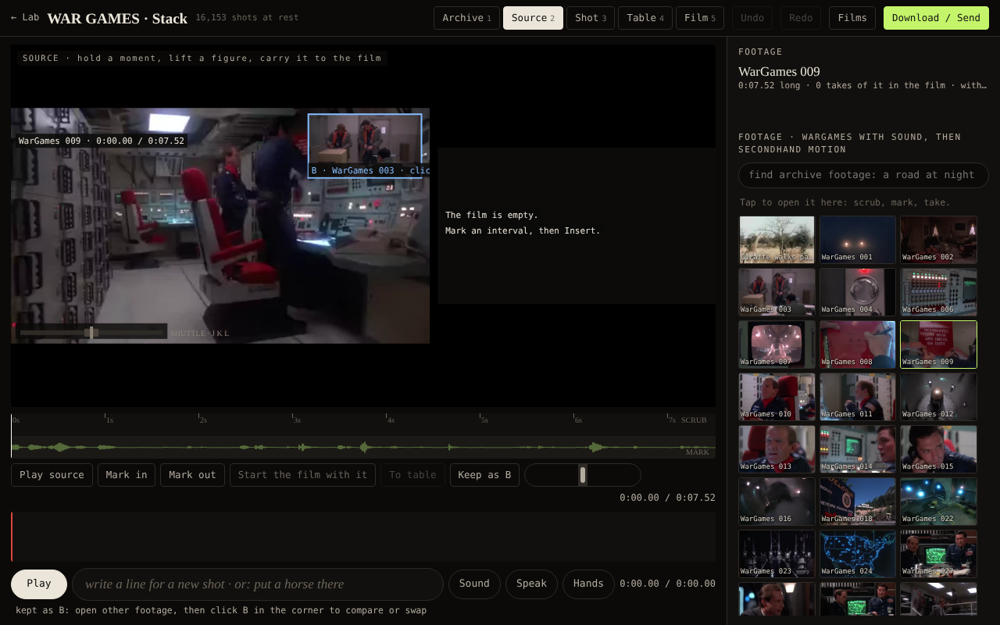
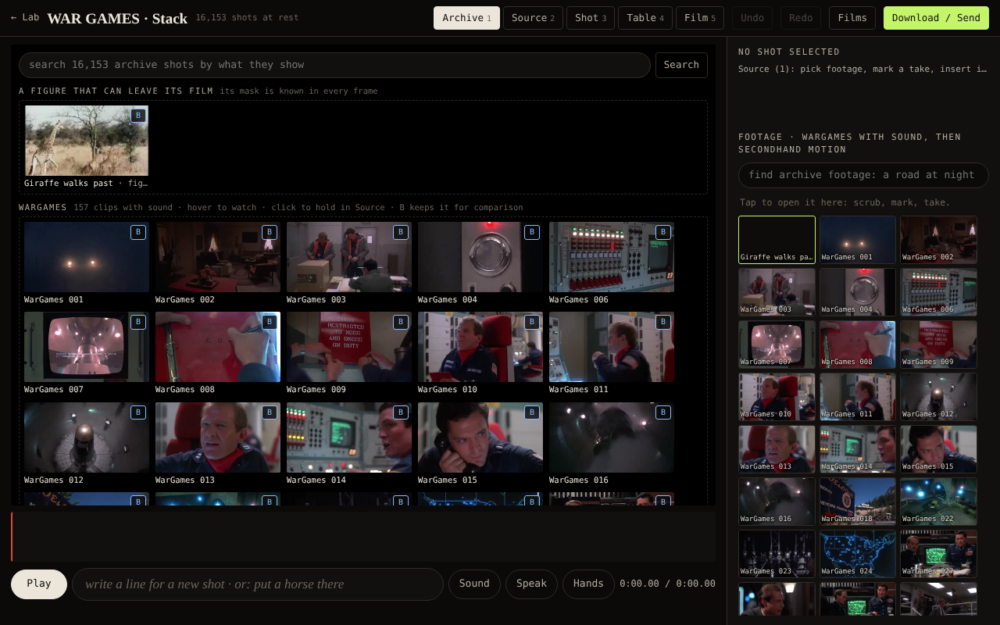
The Floor: a phone with its own camera
Lay the phone flat, screen up, between you and the laptop. It shows the selected shot filling the whole screen. Tap Camera once and its front camera tracks your hand from below.
The hand-off works like this. Pinch the giraffe on the laptop and move your closed hand off the laptop's camera and over the phone. The laptop pauses the hold and shows "CATCH IT ON THE FLOOR". When the phone sees a pinched hand, it catches the figure. As you carry it, the figure follows your hand on the phone and on the laptop's film side at the same time. Open your hand and the figure is placed, as one undo step. If the phone loses your hand, the figure stays paused until you pinch again, and an open hand coming back does not place it. A finger works the same way: touch to catch, lift to place. The ring at the top right cancels.
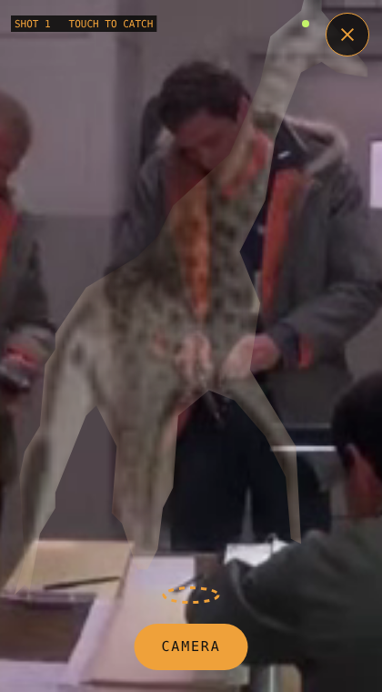
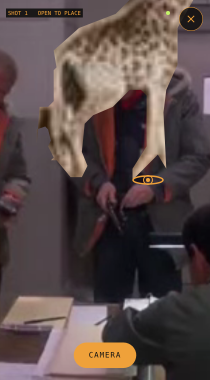
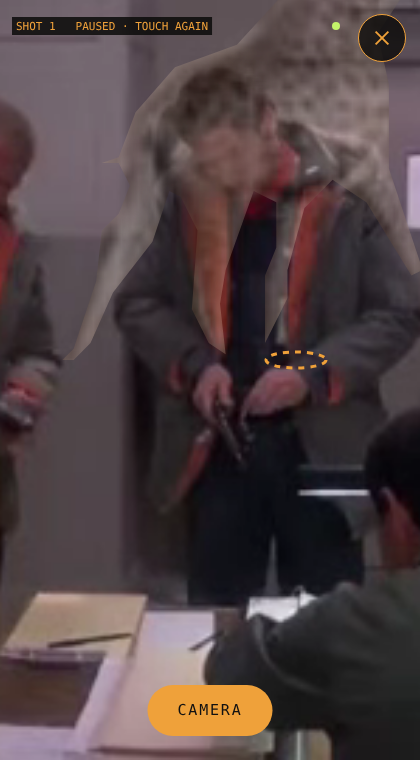
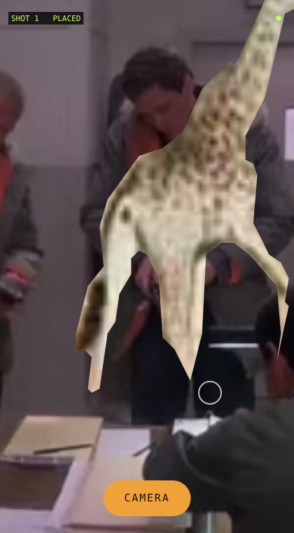
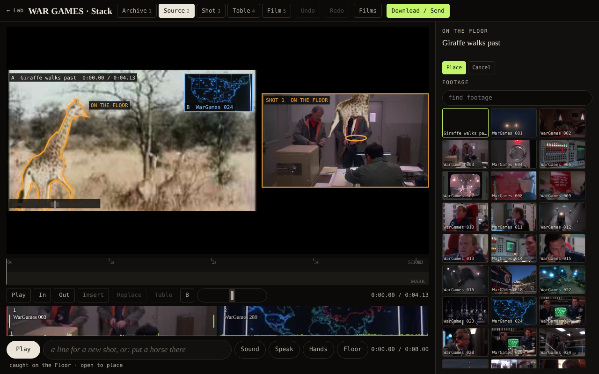
Linking devices: one room, one code
The first phone link did not work on real devices. It needed a direct peer-to-peer connection (WebRTC through PeerJS), and that kind of connection is often blocked on campus Wi-Fi and between Wi-Fi and cellular. The QR code also depended on two outside scripts and gave no code to type. Even when the link worked, the phone showed nothing of what its camera saw or of the tracker downloading, so tracking looked dead.
The link now works like this:
- The Floor button on the editor opens a room with a five-letter code, such as
K4RHW. It shows the code, a QR code when one can be drawn, the address, and who is in the room. The editor keeps the same room across reloads. - On the phone, open
wg-stack.html?floorand type the code, or scan the QR, which carries the code. No scan is needed. - Messages go through public MQTT relays over a secure WebSocket (EMQX, HiveMQ and Mosquitto, all three at once), so no direct connection between devices is needed. Each message carries its sender and an id, so one that arrives twice is used once. A second window in the same browser still links directly.
- Any number of Floors can join. Each shows the editor's selected shot, and swiping on a Floor moves every screen to the next shot. The first Floor to catch a figure owns it; another Floor sees "ON ANOTHER FLOOR" and cannot take it.
- Once its camera is on, the Floor shows a corner view of what its camera sees from below, mirrored, with the tracked hand drawn on it. Under the view is the tracker's state: starting, loading the tracker, no hand, hand, pinch.
- The editor's film side has an orange edge and "FLOOR · same shot" while a Floor is in the room.
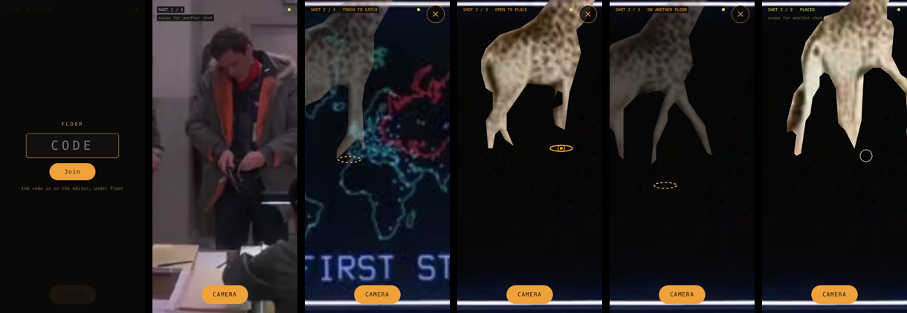
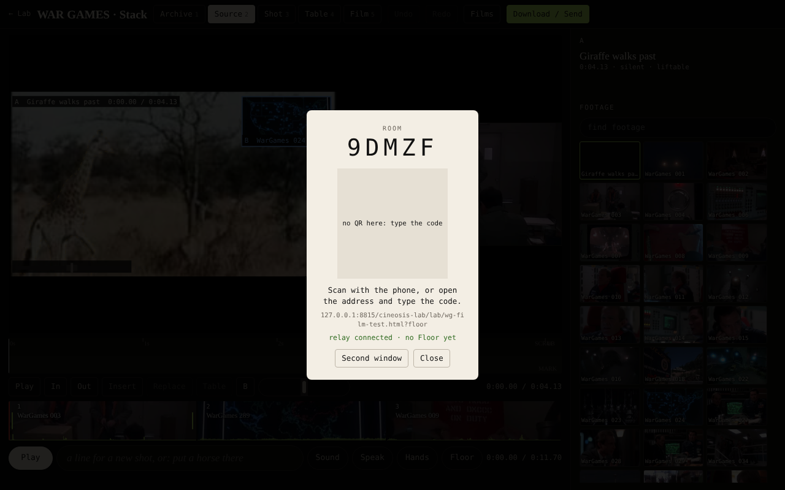
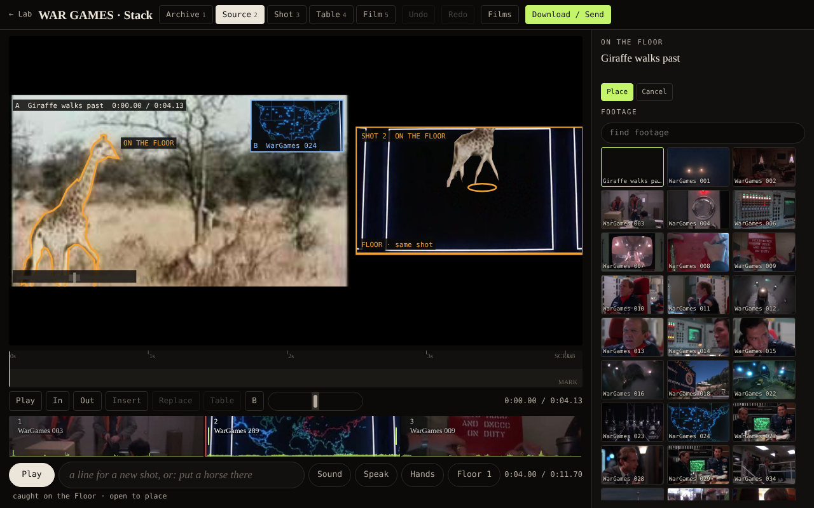
| Across separate browsers, through a relay (SIMULATED hands) | Measured result | |
|---|---|---|
| Editor: Floor button. | Room code shown, relay connected, "no Floor yet". | done |
| Phone: the code screen appears; typed the code with the keyboard and pressed Join. | Linked in 59 ms. The editor reads "Floor 1"; the phone has the film's 3 shots. | done |
| Phone: swiped left. | Both screens moved from shot 1 to shot 2. | done |
| Editor: pinched the giraffe, then the hand left its camera. | Editor paused with "catch it on the Floor"; the phone showed the figure waiting. | done |
| Phone: a pinched hand arrived and moved. | Caught (owner is the phone); the editor's preview followed the hand. | done |
| A second phone joined from the QR address and touched. | 2 Floors in the room; the owner did not change; the second phone showed "ON ANOTHER FLOOR"; no history step. | done |
| Phone 1 opened the hand. | Placed in shot 2, the shot the phone showed, as one undo step. | done |
| Z on the editor. | The figure disappeared from every Floor. | done |
Data: rooms.json. Script: rooms.py. Each device was a separate browser context, so nothing could pass between them except through the relay. The relay was a local MQTT broker (relay-test-broker.py), because this machine cannot reach the public relays. The times are local; through a public relay, expect tens to a few hundred milliseconds more.
Lessons: a first film in six steps, checked by doing
On a first visit, and from the help button, a card with a butter-stick or hand mascot teaches one step at a time. Each step ticks itself off only when the editor sees it done; nothing is ticked by pressing Next.
- Pick a clip. Press 1 and tap a clip. Done when a clip is open in Source.
- Put it in the film. Press + (Insert). Without marks it takes 3 s from the playhead. Done when the film has a new shot.
- Lift a cutout. Press on an outlined figure, carry it onto the film, let go. Done when the history shows a lift.
- Move, size, turn it. Press 3, then drag; the wheel sizes, R turns, F flips, V copies. Two pinched hands: spread to size, twist to turn. Done when the history shows a move and a size or turn.
- Watch it. Space or thumb up. Done when the film plays.
- Two cameras, one hand. This is the calibration test of the joint gesture space, with six checks: the laptop sees your hand; the laptop sees a pinch; a Floor is linked; the Floor sees your hand; the Floor sees a pinch; a figure was passed to the Floor. The Floor shows its own list (linked, camera, hand, pinch, laptop sees your hand too), which says ALL SET and goes away when every item is ticked.
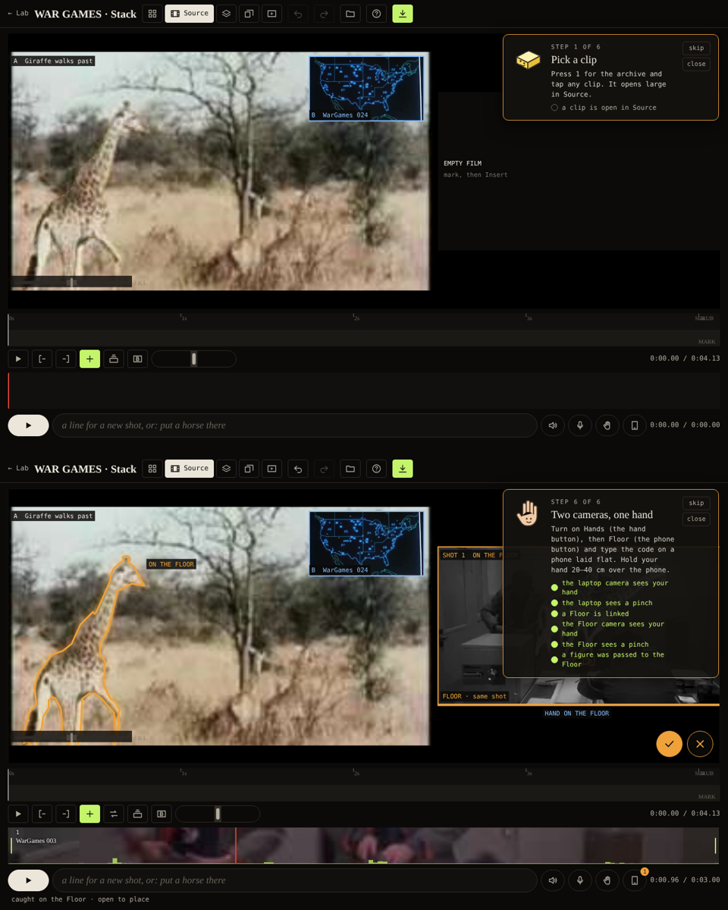
Run with real mouse and keyboard for steps 1–5: lessons.json, lessons.py. Every step advanced; after finishing, a reload does not reopen the lessons.
More cutouts, steadier Floor, a fuller hand language
- Cutouts. The Secondhand Motion repository has a SAM mask file (
masks.json) for 108 shots, but the editor only read masks stored insideshot.json, which only the giraffe has. It now loadsmasks.jsonfor any shot, so every Secondhand Motion clip with a mask can be lifted: lion, horse, ant, alarm clock and the rest. - Flicker on the Floor. The editor resent the whole film every 2.5 s, and the Floor rebuilt it with new shot ids, which threw away its video players and reloaded them. The film now goes out only when it changes or a new Floor joins. The Floor keeps shot ids across updates, so its players survive.
- Turning. Figures can now rotate: a key holds an angle, interpolated like position and size. R turns 15°. Two pinched hands on the laptop: spread to size, twist to turn. On the Floor: two fingers, or two pinched hands, over a figure you are moving.
- Adding clips. + works without marks (3 s from the playhead), so a clip goes into the film with one tap in the archive and one tap on +.
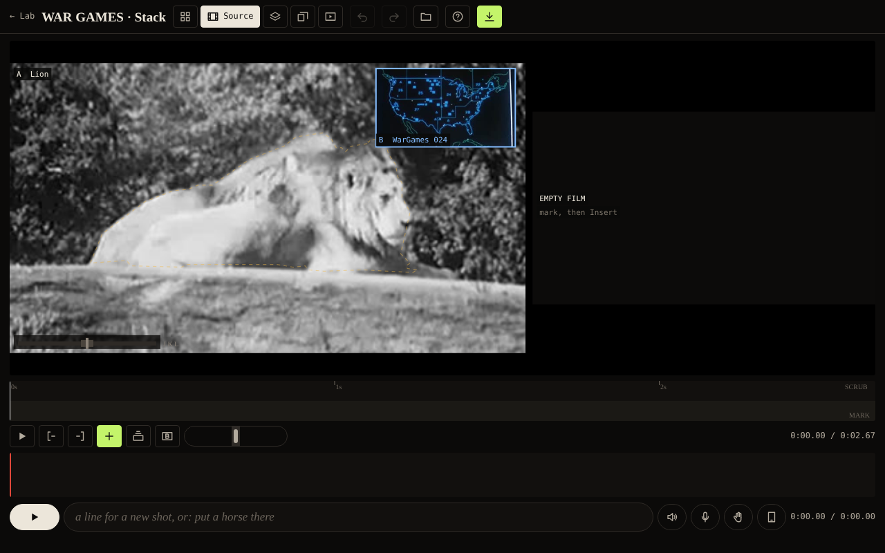
Gesture spaces: two cameras, one hand
The laptop camera faces you and sees your hand upright. The Floor's camera faces up from the table and sees your hand from below. Each camera reads its own gestures, so the same hand shape can mean different things depending on which camera sees it. Both screens always show where the hand is: the Floor's hand is drawn on the laptop's film side, with "HAND ON THE FLOOR" under it, and the laptop's hand shows on the Floor as a blue top edge with "HAND ON TOP".
| Hand shape | Laptop camera (facing you) | Floor camera (facing up) |
|---|---|---|
| Open hand | Points: a cursor on the laptop. A figure under it is outlined ("LIFT"). | Points: a ring on the Floor. A figure under it gets a dashed outline. |
| Pinch | Takes the figure under it, or holds the source to scrub. | Catches a held figure; moves a placed figure; on empty ground, scrubs the shot's time. |
| Two fingers (V), held 0.3 s | Cut: the first V marks in, the second marks out, the third inserts the take. | Double: the figure under the hand is copied beside itself. |
| Thumb up | Plays or pauses the source. | |
| Fist, held 0.6 s | Undo. | |
| Second hand, pinched | Rate: drag away from the middle; release stops. | |
| Hand lost | A hold pauses; on a linked laptop it waits for the Floor to catch it. | A carry pauses; a move is cancelled. Neither commits anything. |
Touch on the Floor, without the camera: tap the left or right edge to change shot, tap the middle to play or pause, drag across the picture to scrub, and press on a figure to move it. The Floor's single Start button goes full screen, locks landscape where the phone allows it, and starts the camera. If no hand is seen for 1.5 s, it shows a phone with a hand above it and "20–40 cm above".
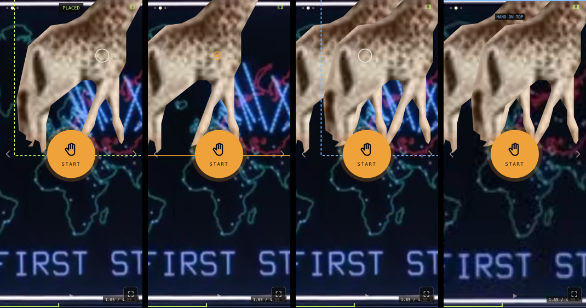
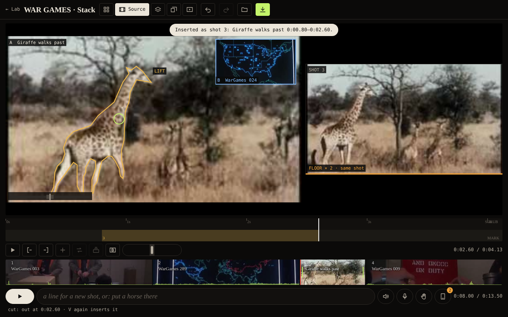
| Gesture checks across the relay (SIMULATED hands) | Measured result | |
|---|---|---|
| Phone: dragged across the picture. | The editor's playhead moved from 4.00 s to 5.03 s; the phone showed 1.03 s into the shot. | done |
| Phone: tapped the middle twice. | The editor played, then paused. | done |
| Phone camera: an open hand. | It showed on the laptop's film side within 4 ms (local relay), and disappeared when the hand left. | done |
| Phone: open hand over the placed giraffe, pinch, drag, open. | Outlined, then moved (x 0.557 → 0.497) as one step, "move figure … on the Floor". | done |
| Phone: V held over the figure. | Two figures in the shot, as one step, "double figure … on the Floor". | done |
| Phone: pinch, drag, then the hand lost. | No history step; the figure's keys were unchanged. | done |
| Laptop camera: a hand in view. | The Floor showed HAND ON TOP. | done |
| Laptop camera: V three times in Source. | In 0.80, out 2.60, then inserted: shots went from 3 to 4. | done |
Lifting states
If you press and release without moving, the hold locks; then tap the film to place the figure. When the hand that is holding the figure is lost, the hold pauses. When that hand comes back open, nothing happens: it neither places nor cancels the figure. Only a new pinch, the Place button or the Cancel button changes the state.
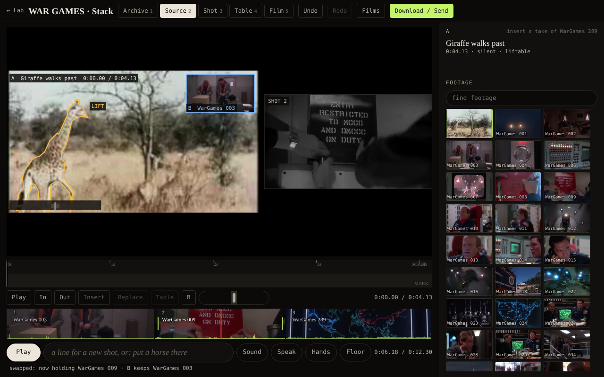
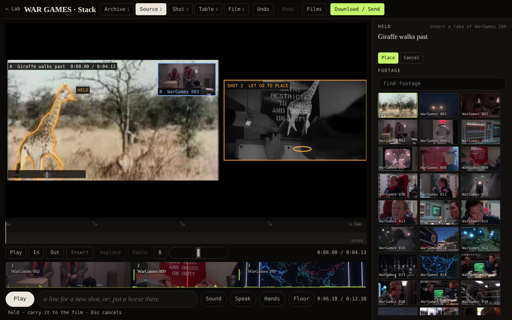
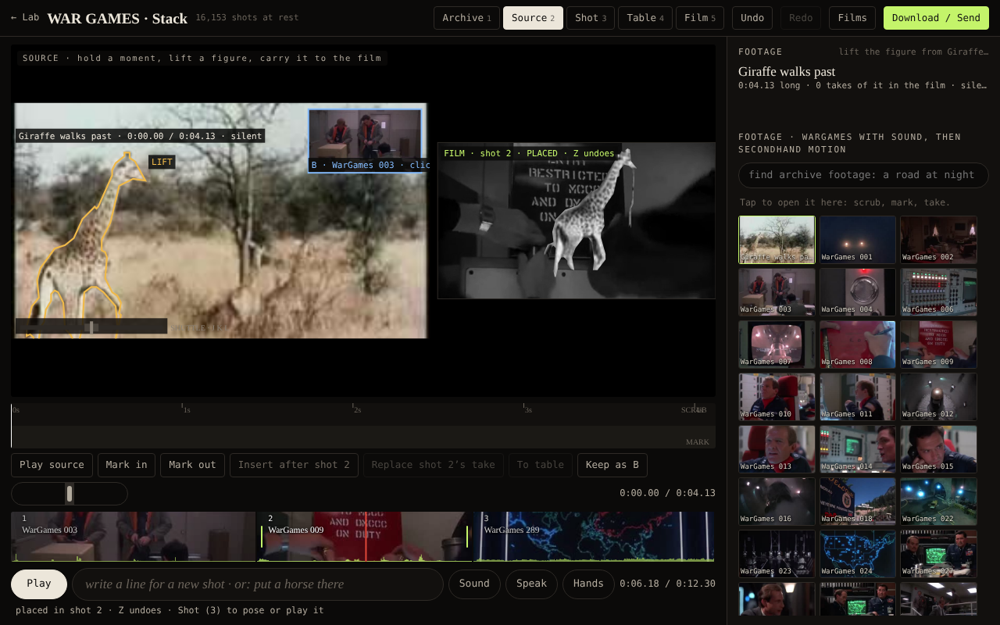
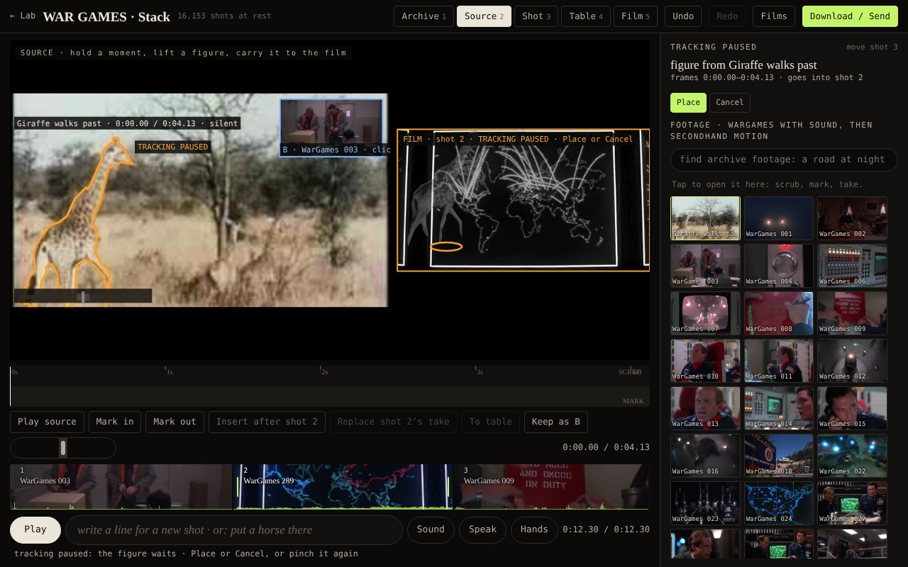
Gesture vocabulary
| Act | Pointer / touch | Keyboard | Hands |
|---|---|---|---|
| Find | Archive wall: type in search, hover to preview, click to hold | 1 Archive, 2 Source | Point at a tile and pinch |
| Compare | "Keep as B", then open another source; click B to swap | ||
| Scrub by position | Drag across the picture. Its full width is the full length of the source. | Arrow keys: one frame; Shift+Arrow: one second | First hand pinches the picture and drags |
| Scrub by rate | Shuttle control: within 10 px of the middle is neutral (rate 0), farther out the rate rises to 4×, and it returns to 0 on release | J back, K stop, L forward (pressing J or L again doubles the rate, up to 4×) | Second hand pinches and drags: 24 px neutral zone, up to 4×, stops when opened |
| Mark | Drag the lower half of the band; Mark in / Mark out | I, O | |
| Take | Insert after shot N · Replace shot N's take · To table | ||
| Lift | Press on the figure and carry it | Pinch on the figure | |
| Place | Let go over the film side, or tap the film after a locked hold. On the Floor: touch to catch, lift to place | Open the hand over the film side. On the Floor: pinch to catch, open to place | |
| Cancel | Let go outside the film; Cancel button; the ring on the Floor | Esc | A lost hand pauses and never commits |
| Pose | Shot view, paused: drag the figure. At a moment with no key, this adds a pose; at a moment with a key, it changes that pose. Shift-drag moves the whole path. "Pose at this moment" adds a key. | Pinch and drag | |
| Record motion | Drag the figure while the film plays | Space plays | Pinch and drag while playing |
| Reorder / trim | Drag a shot on the strip (the insertion point is shown before release); drag a shot's edge to trim | Esc cancels mid-drag | |
| Undo / redo | Undo, Redo buttons | Z, Shift+Z | Fist: undo |
| Watch | Film (5), click to play | Space, Home | Thumb up: play |
Coordinates and time
- Source time is seconds in the footage. A take is
{src, in, out}in source time. - Shot time starts at 0 at the shot's first frame. A shot's length is
out − in; nothing else stores a length. - Film time is the sum of the lengths of the shots before a shot, plus shot time.
- A lifted figure is
{src, in, out, rw, keys}. Its frame at shot time t is source timein + ((t − t0) mod (out − in)), so the lifted interval loops. Each frame is drawn as the source frame clipped by that frame's mask polygons. It is anchored at the bottom centre of the mask's bounding box, so the feet stay on the ground point. - Keys are
{t, x, y, s}. t is in shot time. x and y are fractions of the picture, 0 to 1, independent of screen size. s is the figure's width as a fraction of the picture width. Between keys, the position is interpolated. - Screen to picture: the source picture and the film picture are each fitted into their own rectangle. A point inside the film rectangle maps to (x, y) as fractions of that rectangle, and that is where the figure's feet land.
- Trimming: figures that ran to the old end of a shot run to the new end. Recorded paths keep their shot times.
Preparing the moving figure
The giraffe comes from the Secondhand Motion pipeline. It uses Giraffe walks past: 33 frames at 8 frames a second (4.125 s), stored as 240×180 images. Each frame has a SAM segmentation mask at 480×360 as polygon outlines. No new segmentation was run for this proof. The instrument reads the existing frames and masks. Its source identifier is shm:giraffe-walks-past. Only footage that has masks can be lifted. The WarGames clips carry sound and serve as grounds and takes.
The proof run
A script drove the instrument with real mouse and keyboard input. Each result below was read from the instrument's state or measured from the exported file. Rows marked SIMULATED fed synthetic hand positions into the same hand handler a camera would feed; no camera was used.
| # | What was done | Measured result | |
|---|---|---|---|
| 1 | Opened the page with no saved films. | Opens in Source with the giraffe as A and an empty film. | done |
| 2 | Archive wall: held WarGames 009, kept 003 as B, clicked B. | A = 009, B = 003; after the click A = 003, B = 009. | done |
| 3 | Dragged across the picture, forward then back. | Source time 3.50 s, then 0.83 s. | done |
| 4 | Shuttle: a small movement, a larger one, then release. J, then K. | Rate 0 in the neutral zone, 3.08× when dragged (moved 3.46 s), 0 on release. J gives −1, K gives 0. | done |
| 5 | Marked and inserted a take from each of three clips. | 003 0.37–4.67, 009 0.90–4.67, 289 0.33–4.57; film 12.30 s. | done |
| 6 | Pressed on the giraffe, carried it over shot 2, let go. | Cursor "grab" on the figure, held preview shown, one history step "lift the figure from Giraffe walks past into shot 2". | done |
| 7 | Undo, then redo, of that lift-and-place. | Figures in shot 2: none after undo, the giraffe after redo. | done |
| 8 | Lifted again and let go outside the film. Locked a hold and pressed Esc. | "returned · nothing changed". Esc cleared the hold. No history step was added in either case. | done |
| 9 | Added a pose at 3.20 s and dragged the figure left, then played from the start of the shot. | Keys at 0 s (x 0.55) and 3.20 s (x 0.24). During replay with no input, x went 0.479, 0.401, 0.335, 0.270, 0.240. | done |
| 10 | Dragged shot 3 to between shots 1 and 2, then watched the film. | The label "shot 3 → between shots 1 and 2" was shown before release. Order 003, 289, 009. Sound was present in 74 of 85 samples taken during playback. | done |
| 11 | SIMULATED: pinch on the figure with the right hand, remove the hand, return it open, press Cancel. | Held by Right, then paused after the loss. Still paused after the open hand returned, with no history step. Cancel cleared the hold, with no history step. | done |
| 12 | SIMULATED: the left hand holds the source while the right hand pinches and drags. Repeated with the hands appearing in the other order. | Rate 0 in the neutral zone and 2.1× when moved. Roles Left / Right, the same with the order swapped. Rate 0 when the right hand opens. | done |
| 13 | Opened the Floorboard (?floor) in a second window, held the figure on the laptop, and tapped the Floorboard. | Placed into the Floorboard's shot as one undo step. | done |
| 14 | Inserted the same source twice and trimmed one instance. | One instance's out point is 3.83 s; the other is unchanged at 4.67 s. | done |
| 15 | Measured latency on 64 drags. | From input event to the end of the frame that shows it: median 12.1 ms, p90 23 ms, max 40 ms (headless browser with software drawing). | done |
| 16 | Saved the project file, reloaded the page. | Same film, project file identical, shot and moment 2 / 10.04 s restored. | done |
| 17 | Downloaded the film. | WebM, VP9 and Opus, 2.9 MB. Sound mean −26.5 dB, max −3.0 dB. No page errors. | done |
Data: steps.json. Script: proof2.py.
Hand-off to the Floor (SIMULATED hands on both screens)
| What was done | Measured result | |
|---|---|---|
| Pinched the giraffe on the laptop, then the hand left the laptop camera. | Held by Right, then paused. The status line read "paused · catch it on the Floor, or pinch it again". | done |
| A pinched hand arrived over the Floor and moved. | Caught on arrival. The laptop showed "away", held by the Floor, and its film-side preview followed the hand. | done |
| The hand was lost over the Floor, then came back open. | Paused on both screens. No history step was added, and the open hand did not place the figure. | done |
| Pinched again, carried, opened. | Placed as one undo step, "lift the figure from Giraffe walks past into shot 1". Z on the laptop removed it. | done |
| Touch: a locked hold on the laptop, then a finger on the Floor dragged and lifted. | Caught while the finger was down, and placed on lift. | done |
| Held on the laptop, then tapped the ring on the Floor. | The hold cleared and no history step was added. | done |
Data: handoff.json. Script: handoff.py. The Floor ran in a second window linked by BroadcastChannel. Hand tracks were fed to the same handlers a camera feeds.
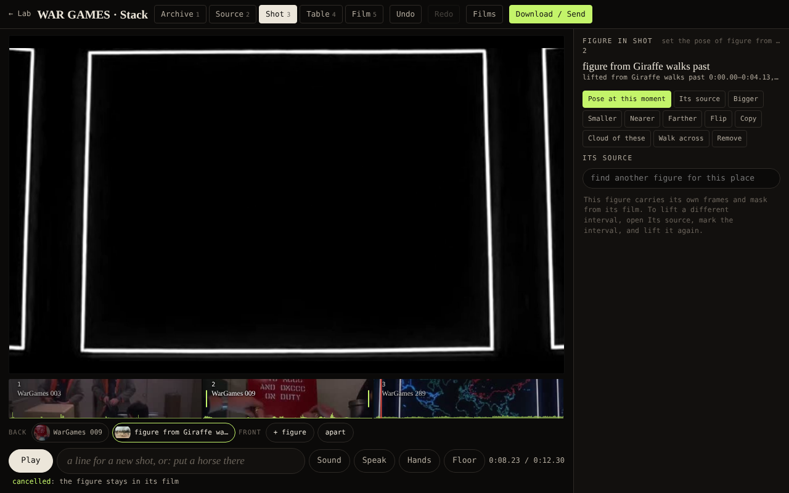
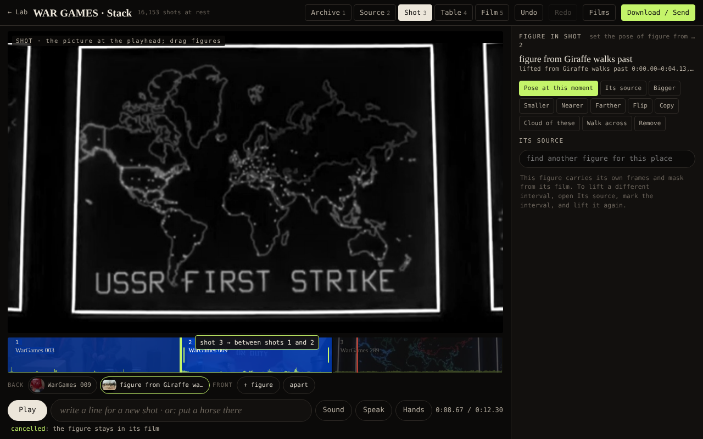
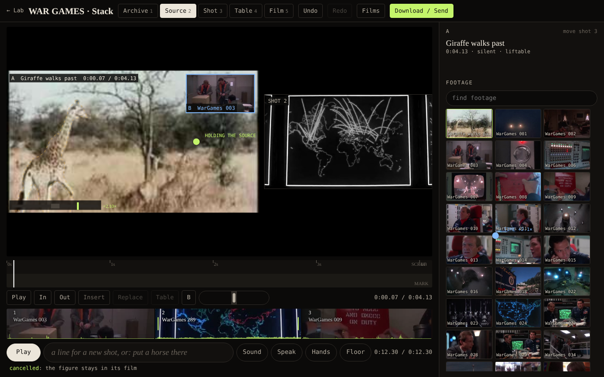
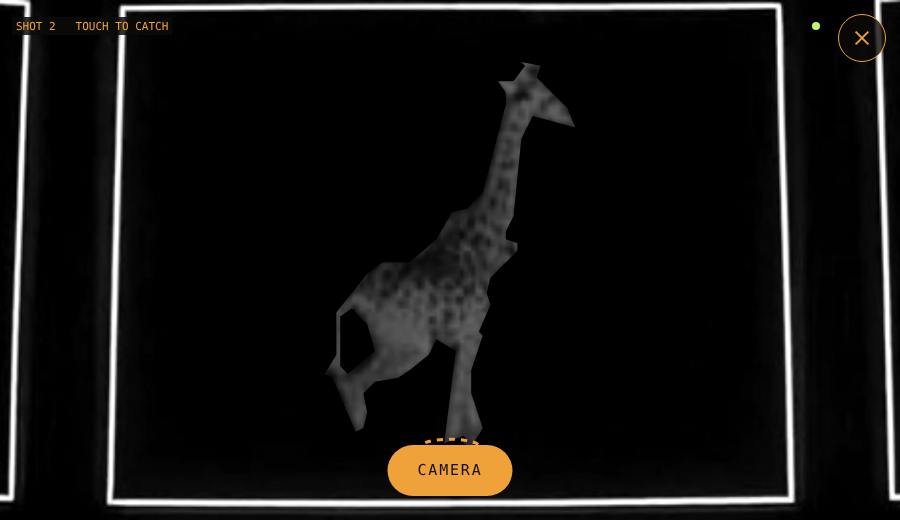
Does the export agree with the preview?
At six moments, the frame drawn by the paused instrument was compared with the nearest exported frame. The difference from the matching preview frame was 0.6–1.6 grey levels out of 255. The difference from frames of other shots was at least 9.0. Each exported frame matched its preview within 0.07 s.
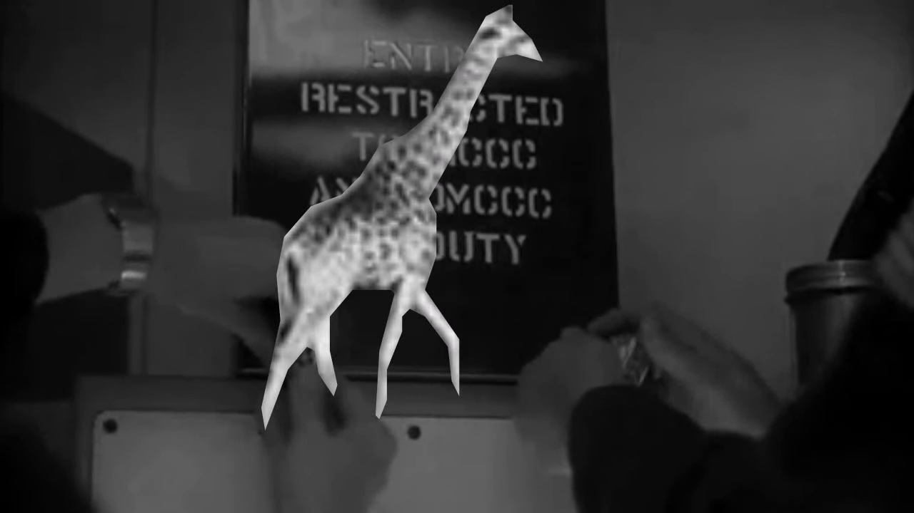
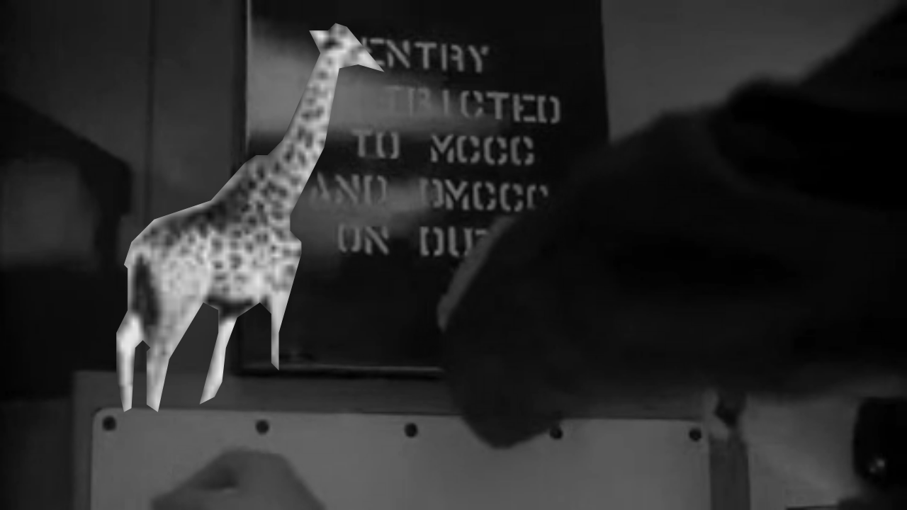
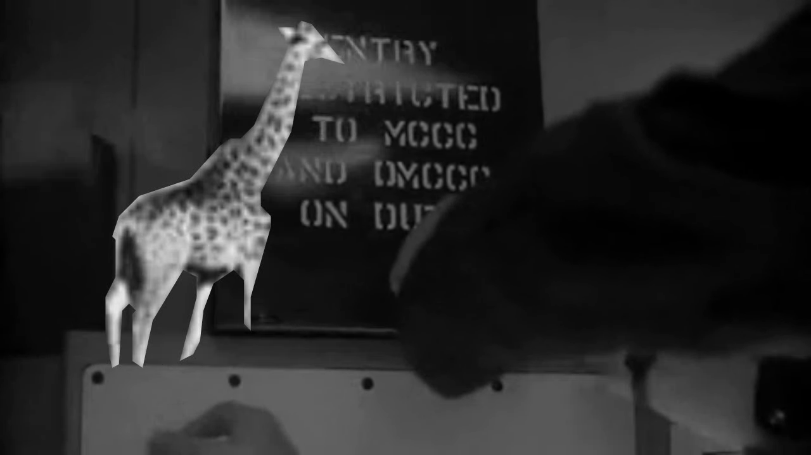
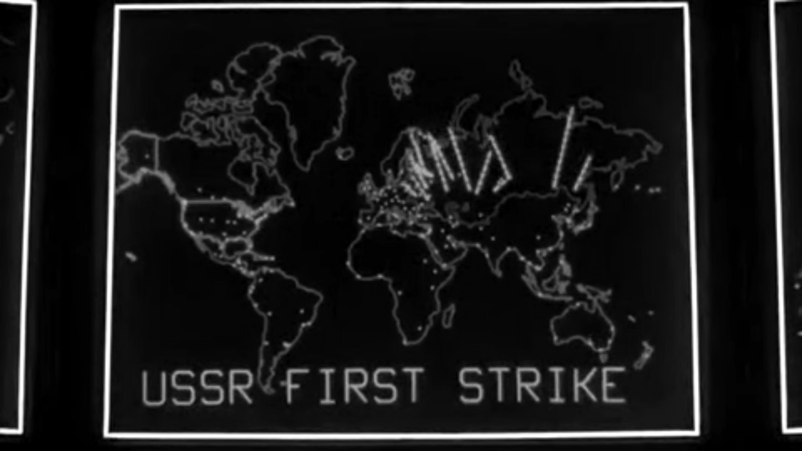
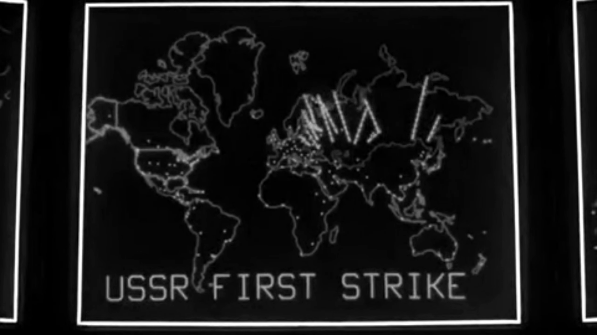
Data: compare.json. Script: compare.py.
Independent critic
A separate agent got the build, the media and the eight-part task, with no explanation of the controls. It drove the page with mouse and keyboard. It read state only to check results. It did not use the simulated hands. Its verdict:
INCONCLUSIVE, LEANING PASS
I completed all eight steps through the interface without help, but the exported film does not match the working preview: the placed giraffe flickers out of the file for about the first two seconds of its shot.
What it did
- Found "Keep as B" and swapped A and B in under 10 seconds. Scrubbed by dragging. Used the shuttle and J, K, L; the "SHUTTLE · J K L" caption made the keys findable at once. Marked with I and O.
- Inserted takes from WarGames 001, 003 and 010 in under 30 seconds.
- Selected shot 2 and pressed and held on the giraffe: an orange outline and "HELD" appeared. It carried the figure over the film side and saw "let go to PLACE here" with a live composite. On release the history had one more step and the panel showed "PLACED · Z undoes".
- Got stuck on motion for three tries. Dragging the figure at a second moment overwrote its only key. Clicking the strip to seek deselected the figure, which hid "Pose at this moment".
- Reordered shots and trimmed an out point. Played with sound; the mixer was running. Undid and redid the lift-and-place exactly. Cancelled a carry and a figure move with Esc. Reloaded to the same film, shot and moment. Exported a 1.47 MB WebM with sound.
Largest failure, repair condition, repair
Failure. In the export, the placed giraffe was missing from about 10 of the first 30 frames of its shot. The live preview showed it in every frame.
Repair condition, as the critic wrote it. Export a film in which a lifted figure is posed across a shot and extract every frame of that shot with ffmpeg. The figure's pixels must appear in 100% of those frames. The export's last video packet must be within one frame of the film's length, with no gap longer than two frame intervals.
Cause. A lifted figure's frames are separate images that the browser loads when they are first drawn. While a frame was still loading, the drawing function drew nothing. The preview had already loaded them by the time the critic watched it, but the export reached frames the page had not drawn before.
Repair. Before recording starts, the export now loads every frame of every lifted figure in the film. While a frame is still loading, the drawing function draws the nearest loaded frame from the same interval, so the figure never disappears.
Check. coldfig.py opens a film straight into the editor, so none of the giraffe's frames have been shown. It exports immediately and counts the giraffe's pixels in every exported frame of its shot. The shot has a black ground, so any bright pixel belongs to the giraffe.
| Build | Frames in the figure's shot | Frames with the figure | Last frame vs film length | Longest gap between frames |
|---|---|---|---|---|
| Before the repair | 108 | 93 (15 empty) | 7.53 s / 8.00 s | 0.095 s |
| After the repair | 118 | 118 | 7.95 s / 8.00 s | 0.050 s |
The figure part of the condition is met, and so is the gap part: the longest gap is 0.05 s, under two frame intervals. The last frame comes 0.05 s before the film's end, which is about 1.5 frames, against the critic's limit of one. The test browser draws in software and records at about 10 frames a second, so this was not measured on a normal computer. See Limits.
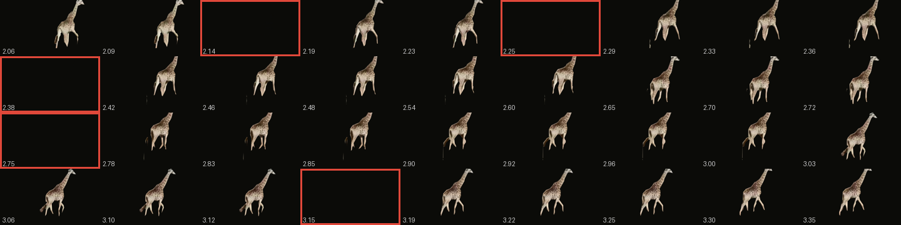
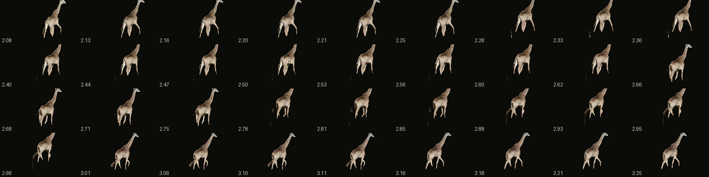
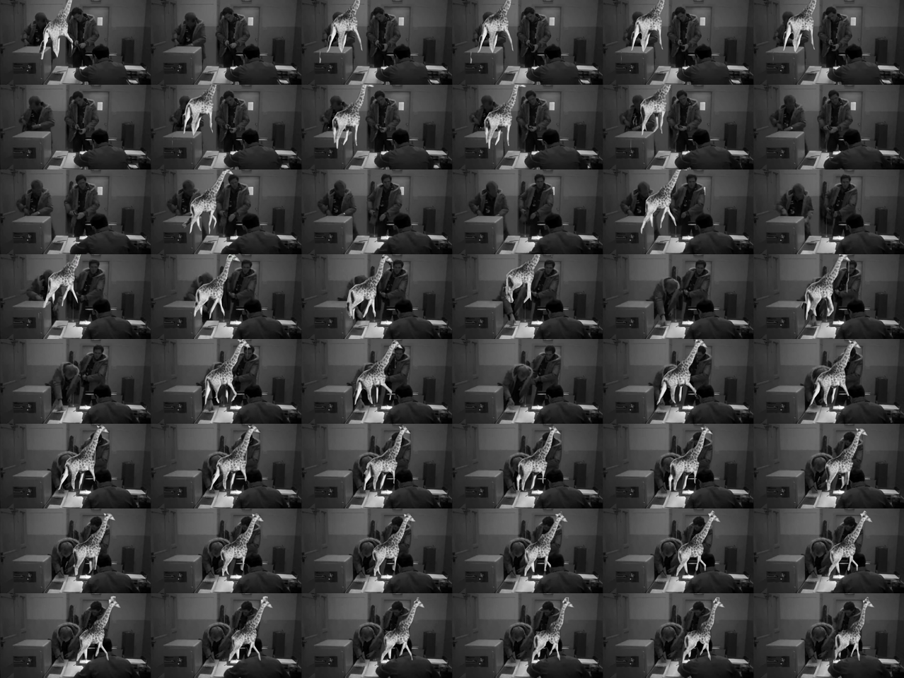
Other findings
| Finding | What was done | |
|---|---|---|
| Dragging a figure at a second moment overwrote its only key instead of adding a pose. | A paused drag at a moment more than 0.1 s from any key now adds a pose. A drag at the same moment as the only key still moves the figure, and Shift-drag moves the whole path. Checked with real input: one key at 0 s, click the strip at 3 s, drag. The result is keys at 0 s and 3 s, and the history reads "set the pose … at 3.00 s". | repaired |
| Clicking the strip to seek deselected the figure, which hid "Pose at this moment". | A strip click inside the selected figure's shot keeps the figure selected. | repaired |
| The film side's text was cut off ("Insert it fi"). | Labels on the film side are shortened with an ellipsis to fit, and the empty-film message is on two lines. | repaired |
| "PLACED · Z undoes" stayed on screen after Z. | Undo clears it. | repaired |
| (Found later.) On the Floor, the carried giraffe floated above its ring. | Some mask frames carry small stray outlines below the feet, with areas of 2–416 against about 9,000 for the giraffe. Outlines smaller than 5% of the largest are now dropped, both for the anchor and for the cutout. | repaired |
| After a reorder, the side panel named the selected figure's shot while the picture showed another shot. | Not changed. The panel describes the selection, and the selection does not follow the playhead. | open |
| Dropping a reordered shot starts playback. | Not changed. Playing the changed join is deliberate. It plays from 1.5 s before the join to 1.5 s after, then stops. | kept |
| Undo history is lost on reload. | Not changed. The film, the shot and the moment are restored; the history is not. | open |
| At 1280 px wide, the film side is small (356×200). | Not changed. | open |
| A clip this browser cannot decode (WarGames 002) showed a still and could be marked, with no warning. | Not changed in this pass. The earlier repair covers clips that fail to load. A clip that loads but cannot decode still shows its thumbnail. | open |
Strengths the critic named
- Hold to lift with a live outline, then a carry preview composited onto the target shot before release. It called this the best part of the build.
- Lift-and-place undoes as one step and redoes exactly.
- Esc cancels a carry and a move cleanly, and says "cancelled".
- Every action reports what it did in the bottom line.
- A/B comparison with "Keep as B" and the corner picture.
- The shuttle and J, K, L, labelled where they are used.
- Reload restores the film, mode, shot and playhead.
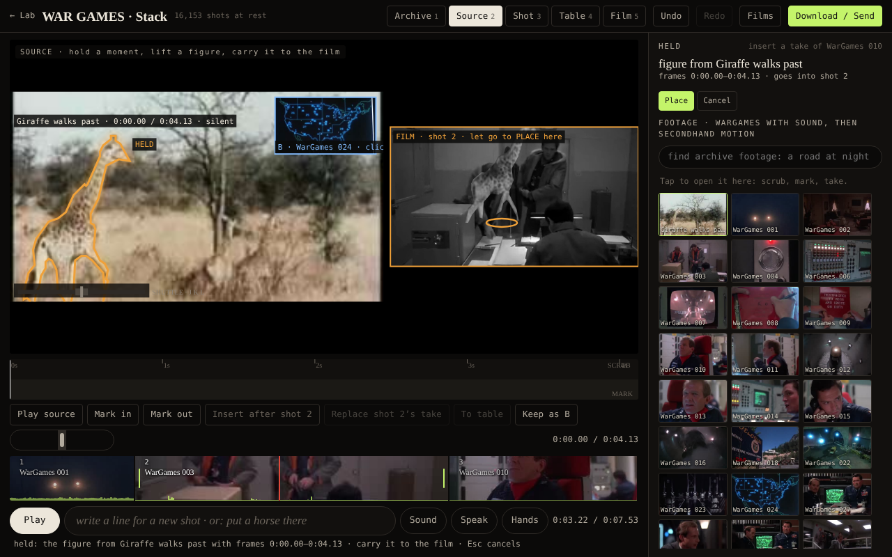
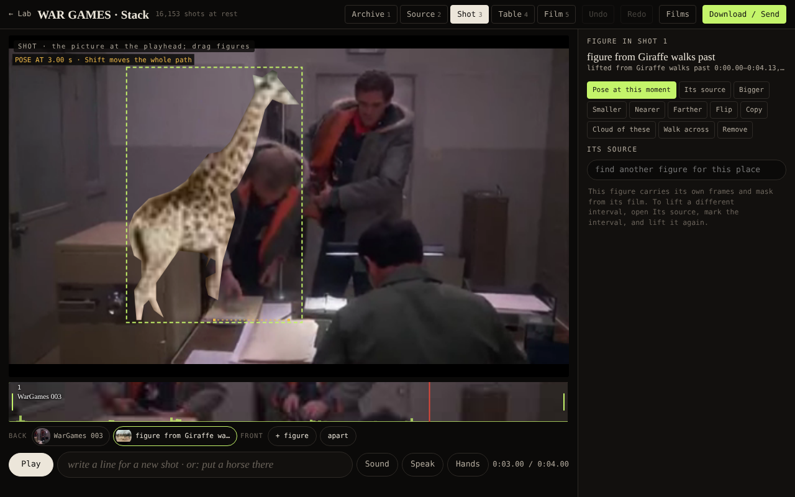
Performance
- Input to visible frame, measured in headless Chromium with software drawing: median 19.2 ms, p90 38.9 ms, max 49.2 ms over 64 drags. The target is the next display frame, 16.7 ms at 60 Hz. It has not been measured on a real device.
- Export is recorded in real time while the film plays. In the test browser it records at about 10 frames a second. Exported frames matched the preview within 0.13 s.
- A lost hand pauses a hold after 300 ms. In the Shot view, a lost hand cancels a figure move after 500 ms.
Input paths: what was verified, and how
| Input | Status | How |
|---|---|---|
| Pointer and keyboard | verified | Real Playwright mouse and keyboard events, in the proof run and by the critic. |
| Touch | partly | The same pointer events handle touch. No touch device was used. |
| Hands | simulated | Synthetic hand tracks were fed to the handler a camera feeds: pinch, open, loss, two roles. Not tested with a camera. |
| Floor in a second window, touch or pointer | verified | BroadcastChannel between two windows of the same browser. |
| Floor camera hands | simulated | Synthetic tracks fed to the Floor's hand handler: catch, carry, loss, place. No camera was used. |
| Rooms through a relay, separate browsers | verified | Against a local MQTT broker; code typed with the keyboard. |
| The public relays, real phones | untested | This machine cannot reach the public brokers, and no phone was used. |
| Voice | untested | No microphone. |
Limits
- The hands were never tested with a camera. Their rules (neutral zone, roles, tracking loss) are tested only with simulated tracks.
- The public relays and real phones are untested. The relay code was tested only against a local broker.
- The relays are public: anyone who knows a room code can read that room's messages (the film's shot list and figure positions) and send into it. The codes are random, five characters from 31 (about 29 million). Do not use the Floor for footage that must stay private.
- The Floor's camera view and tracker state were not seen with a real camera.
- The Floor's front camera assumes the phone lies flat, screen up, with you at its bottom edge. It mirrors left and right. Other orientations were not handled or tested.
- On a portrait phone the shot fills the screen by cropping its sides, so placements are limited to the middle of the picture.
- Only footage with masks can be lifted. Here that is the Secondhand Motion giraffe. WarGames footage has no masks.
- The test browser cannot decode H.264, so tests used VP9 copies of 19 WarGames clips. H.264 playback in a real browser was not tested here. A clip that loads but does not decode is not reported.
- The export's timing was measured only in the test browser, with a last frame 0.05 s short of the end. A normal computer was not measured.
- Undo history is not saved across reloads.
- Sound cuts hard at every join.
Running it
Open wg-stack.html in a desktop browser. With no saved films it opens in Source on the giraffe. Press 1 for Archive, 2 Source, 3 Shot, 4 Table, 5 Film. The Floor button pairs a phone by QR code, or opens a second window. wg-stack.html?floor is the Floor itself. The page is built from film.template.html with python3 build.py.
Scripts: proof2.py (proof run), compare.py (export against preview), coldfig.py (figure in every exported frame), posecheck.py (pose at a new moment), serve.py (local server). Data: coldfig-before.json, coldfig-after.json. The earlier editor proof is at wg-stack-proof.